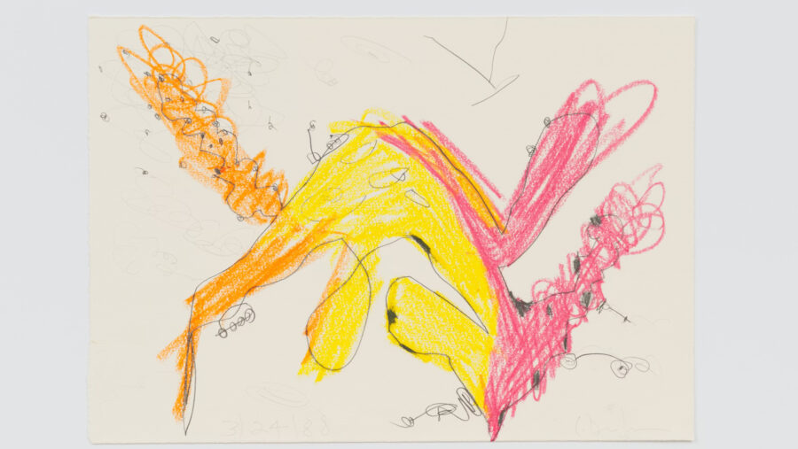

Carroll Dunham: Drawings, 1974–2024
Over the course of five decades, Dunham has engaged in wide-ranging formal and thematic experimentation across various media, yet his drawings represent a distinct, interconnected body of work.
Dunham’s mature artistic career began in 1970s New York amid a scene dominated by Minimalist aesthetics. Using simple elements such as line, shape, and color, he made a tremendous impact with work that nevertheless signaled a return to subject matter. In the intervening decades, Dunham has continued to produce drawings that test, and ultimately collapse, the porous boundaries between abstraction and figuration: bodies shapeshift into buildings, trees pose like models, the cellular resembles the cosmic, and internal organs or private parts are made very public.
Working in series, Dunham methodically tests out every possible outcome of a drawing’s composition or content. This approach seems to spontaneously yield new imagery and ideas that link one body of work to the next. His influences are likewise wide-ranging—art history, philosophy, psychoanalysis, and evolutionary science as well as science fiction and comic books—all of which inform his explorations of the tension between male and female, nature and culture, self and other.
Dunham foregrounds the development of his work by precisely dating each drawing. This practice is evidenced in the thousands of drawings he has organized into an archive, from which this show is derived.
Developed in conversation with the artist, this comprehensive survey is the first museum presentation focused exclusively on Dunham’s drawings. Encompassing a 50-year period and featuring many drawings making their public debut, it celebrates the medium central to Dunham’s expansive practice.